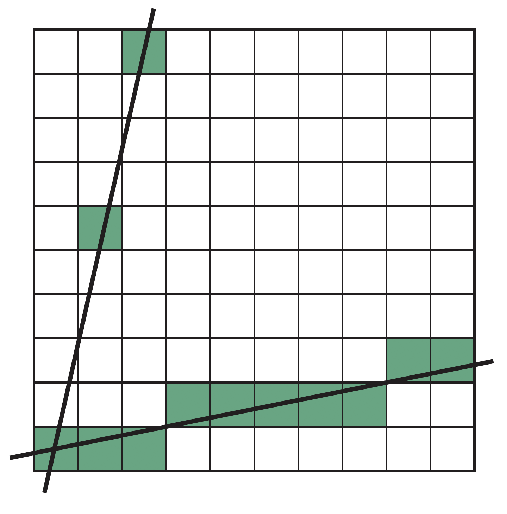
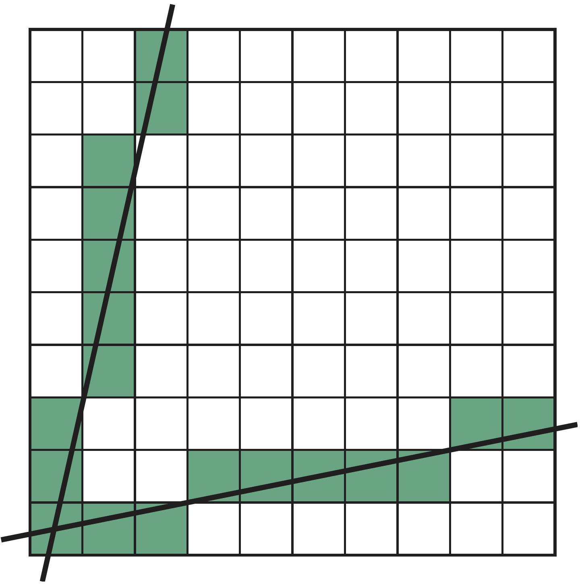
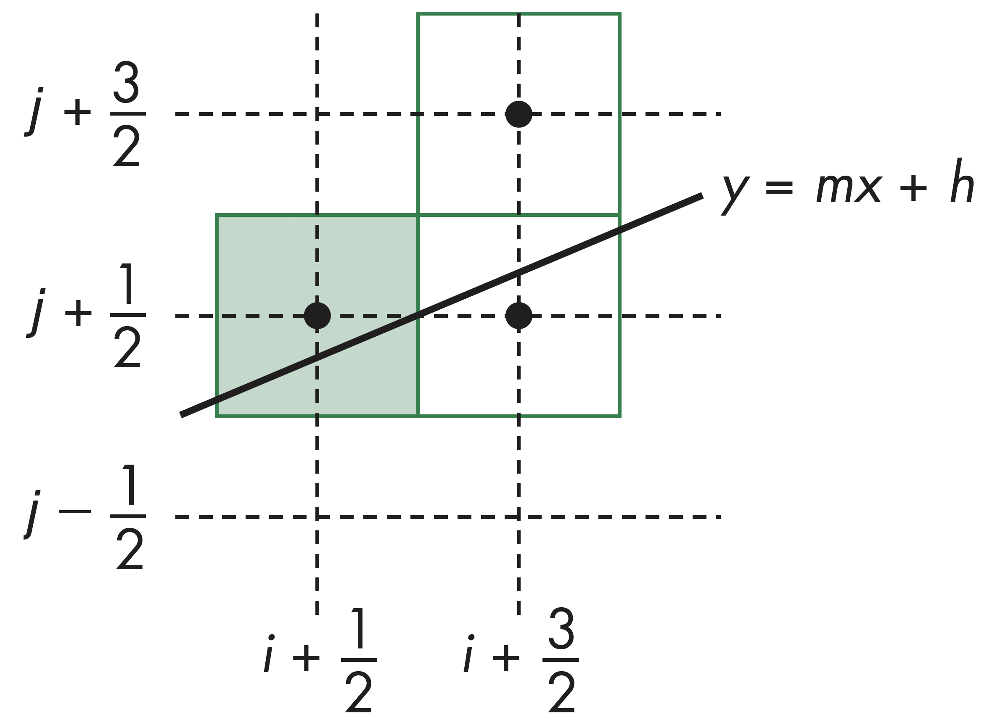
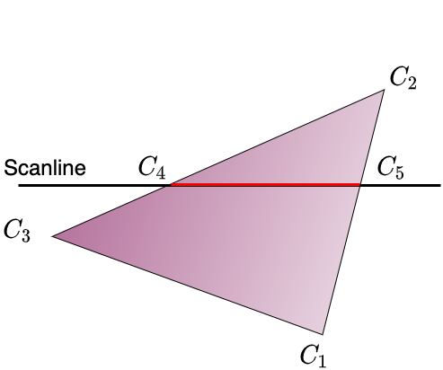

计算机图形学
第八章 从几何到像素
光栅化
光栅化
概述
光栅化，又称为扫描转换，用于确定由顶点构成的基本图元内包含了哪些像素，并根据这些像素构成面片，每个面片都有其属性，如颜色、纹理坐标等，可根据顶点的相应值进行插值计算得到。而像素的颜色也是根据顶点的属性如颜色、纹理等计算得到
光栅化
线段的扫描转换
首先来看顶点在窗口坐标中都为整数的线段
假设有线段如右图中所示，直线两顶点坐标分别为$(x_1,y_1)$,$(x_2,y_2)$，直线方程为$y=mx+h$，其中斜率$m=\frac{\Delta x}{\Delta y}$。并假设已定义了函数write_pixel用于绘制每个像素

光栅化
DDA算法
DDA为DigitlDifferential Analyzer即数字差分分析的简称，主要用于求解微分方程。
这里假设直线$y=mx+h$满足微分方程形式 $$\frac{dy}{dx}=m=\frac{\Delta y}{\Delta x}=\frac{y_2-y_1}{x_2-x_1}$$
在沿着扫描线$\Delta x=1$的方向，可以执行如下的操作：
for(x=x1;x<=x2;x++){
y+=m;
write_pixel(x,round(y),line_color);
}
光栅化
DDA算法
DDA算法的主要思想是对每一个x，计算距离其对应值最近的y值，但是对于分辨率较大的线段，会存在问题，如下图所示：
光栅化
解决方案
解决此问题，可利用对称性质，即原方法适用于$0\leq m \leq 1$情形，当$m>1$时，交换$x$和$y$的角色，即对每个y，找到其对应值最近的x
光栅化
Brrsenham算法
DDA算法需要在每一步都执行浮点运算，在Bresenham算法中可避免浮点计算
算法执行利用对称性先考虑$0\leq m\leq 1$的情形，其它情况可根据对称性进行计算。假设像素的中心位置为整数的一半。根据算法，如果从某一个特定像素开始绘制，下一个能够绘制的像素只有两种可能
光栅化
Bresenham算法候选点
光栅化
Bresenham决定值
根据$d=\Delta_x(b-a)$取整，有以下两种情形:
- $d>0$，取上方像素
- $d<0$，取下方像素
光栅化
增量递推式
为提高$d$的计算效率，来看$d_k$，其值对应于$x=k$时的值，则有
- $d_{k+1}=d_k-2\Delta y$, $d_k<0$
- $d_{k+1}=d_k-2(\Delta_y-\Delta_x)$, $d_k\geq 0$
则对每一个x，只需要一次整数加法和一次判断即可，在显卡核心上，只需要一条指令氷可完成计算
光栅化
多边形扫描转换
多边开扫描转换，即多边形势填充，关键在于决定哪些像素位于多边形内，而哪些像素位于多边形外，需要分情形讨论。
- 对凸多边开，容易进行判定
- 对非凸多边形，不容易计算
利用奇偶性测试，即通过扫描线与多边形边的交战数
利用环绕数(Winding number)
光栅化
环绕数
环绕数即计算像素点被包围的次数，如图产中所示。一般默认认为环绕数非0，即意味着像素位于多边形内部
光栅化
帧缓存填充
帧缓存填充一般在流水线最后阶段进行处理，并且只针对凸多边形，非凸多边形需要先分割为凸多边形的镶嵌。填充的颜色根据顶点的颜色计算得到，并结合深度缓存算法确切计算每个像素应当着色的颜色
光栅化
插值计算
图中，$C_1,C_2,C_3$的颜色由顶点着色或glColor指定，$C_4$的颜色根据$C_2$和$C_3$的结果插值计算得到，$C_5$的结果根据$C_1$和$C_3$的结果插值计算得到，同时对于位于$C_4$和$C_5$之间的像素点，则根据这两个点的值插值计算得到
光栅化
漫填充
漫填充(Flood Fill)，其基本思想是利用多边形内的一个种子点作为起点，以递归的形式开始填充。该起点初始颜色设置为白色，扫描过程中将边及内部的点填充为黑色
flodd_fill(int x, int y){
if(read_pixel(x,y)==WHITE){
write_pixel(x,y,black);
flood_fill(x-1,y);
flood_fill(x+1,y);
flood_fill(x,y+1);
flood_fill(x,y-1);
}
}
光栅化
扫描线填充
维持一个用于表示多边形与扫描线相交情况的数据结构，也可完成填充，其主要过程为两步，一是根据扫描线进行排序，二是对每条扫描线进行填充